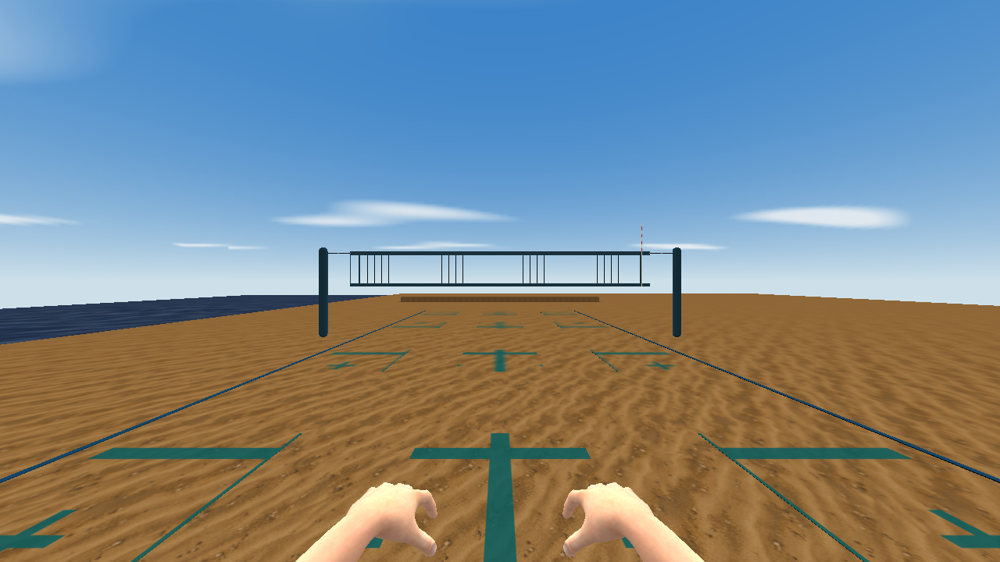
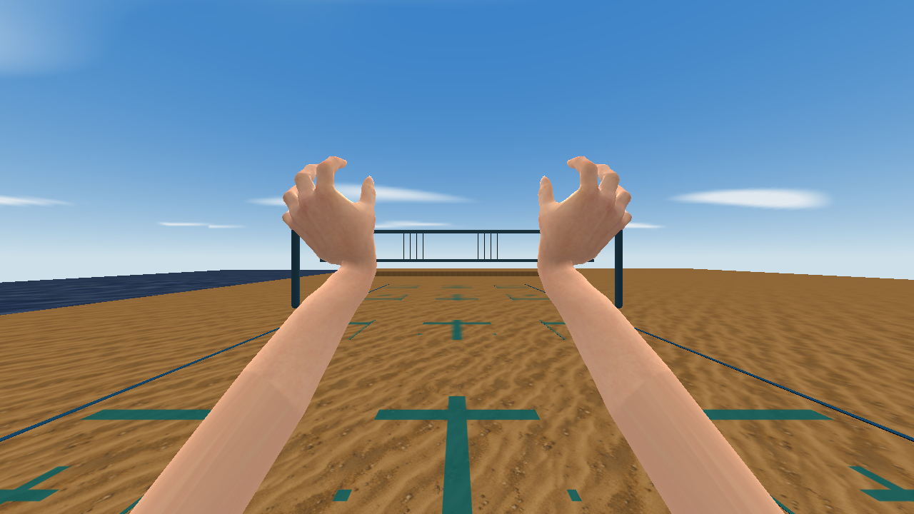
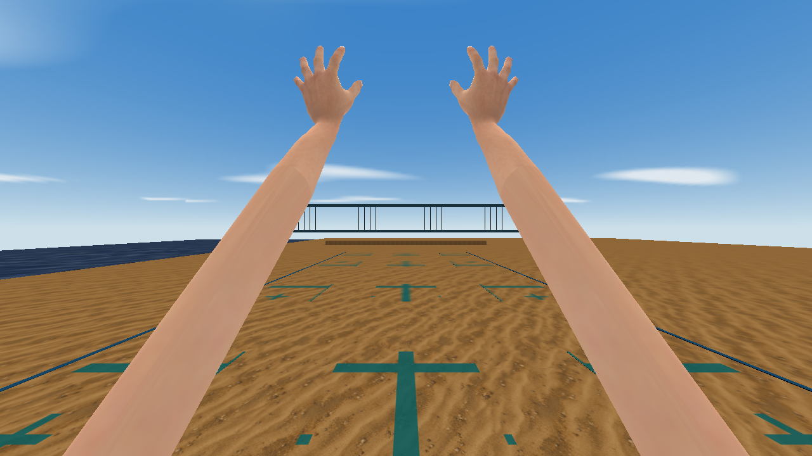
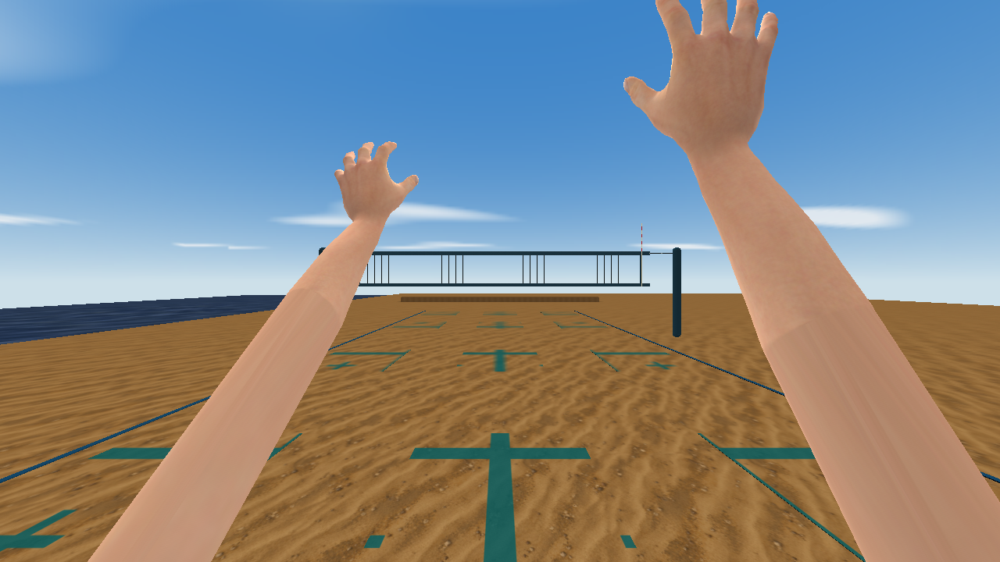
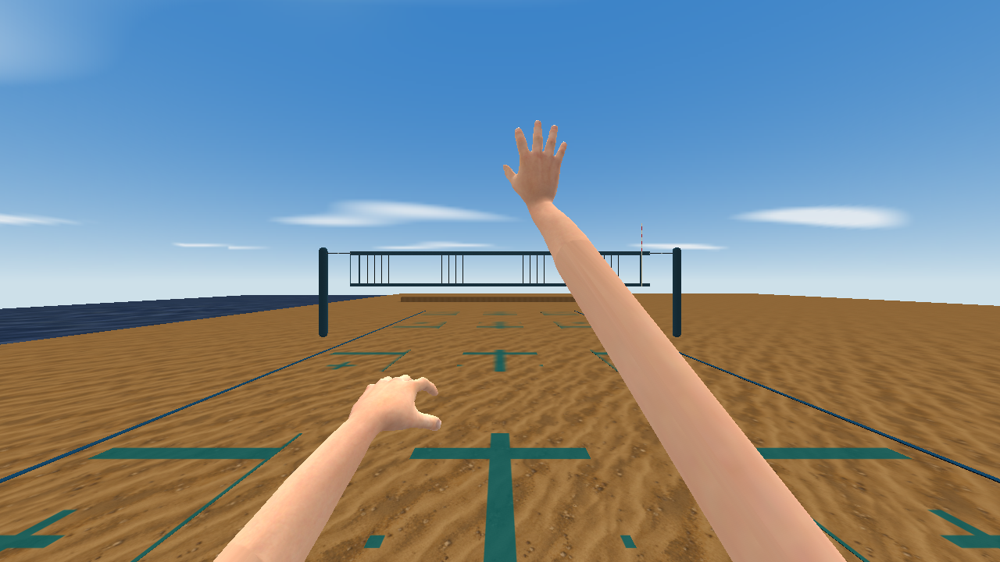
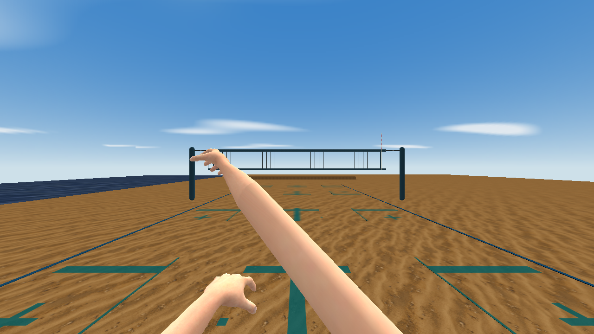
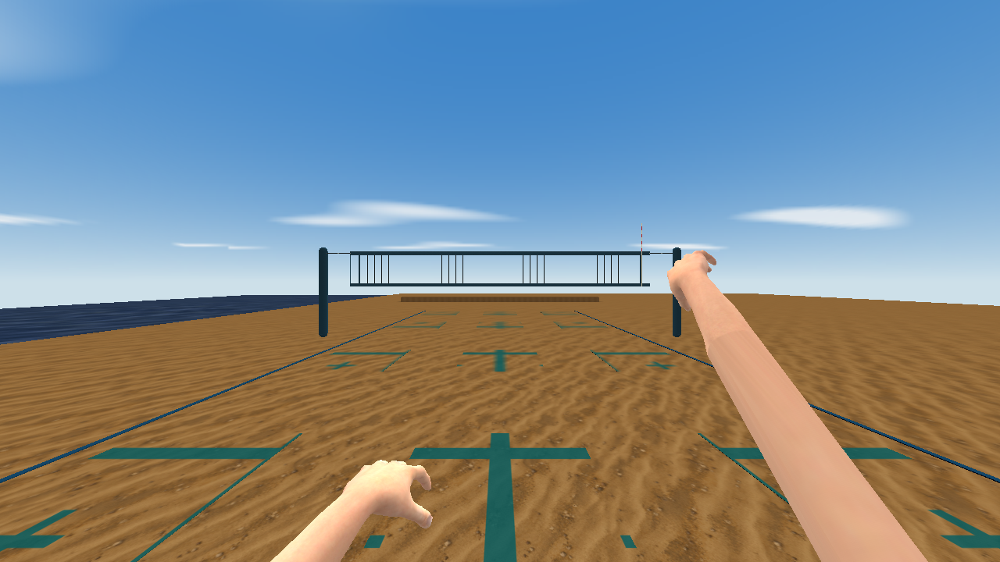

Seven actual QSS-M captures at 1280×720, four-sample MSAA and a fixed 0.05-second simulation timestep. Frozen fixtures show exact poses; the gameplay summaries separately check live contacts. These captures have no paired empty-studio baselines.
Production case study · Capture metadata · 402-pose strict report · Packed-frame verification · Gameplay summaries · Anatomy/skin license
Model SHA-256: 328cc74c500233f56ec5403a0a0544595b290fb7a3190a9e44c6408cc3c2d56d
Skin SHA-256: d38c24379e85d135b986f33172746ed023dffd0b28018a8bcac4605a063f4e97







CC0 MakeHuman anatomy/skin; original GPL volleyball rigging and motions. See the repository's source credits.